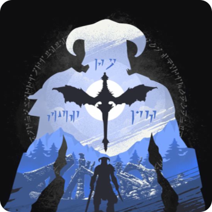
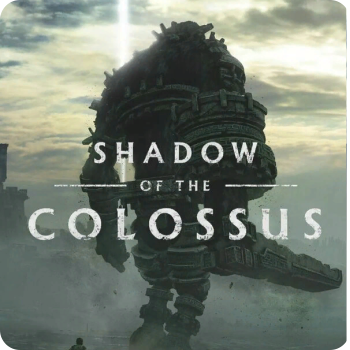
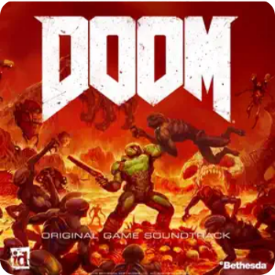
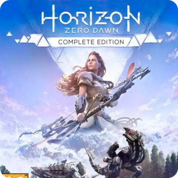

Подробная информация о треке: Earth(Assassin’s Creed 2 - Jusper Kud.

Earth
Игра, где есть эта музыка:
Assassin’s creed 2Автор музыки:
Jasper KudГод написания: 2009
Длительность: 3:58
Атмосферная Медитативная Оркестровая с электронными элементами Хоровые партии Эпическая Природная тематика Минималистичная Кинематографичная Эмоционально глубокая Эволюционирующая Широкомасштабная Для фона при концентрации Музыкальный нарратив Современная классика Ностальгическая Драматическая кульминация Этнические мотивы Синтезаторные текстуры Для открытых локаций Философская
"Earth" — одна из ключевых композиций Jesper Kyd для саундтрека Assassin's Creed 2, отличающаяся особой атмосферностью и эмоциональной глубиной. Где звучит в игре: — Во время исследования родового поместья Аудиторе в Монтериджони, особенно в ночных сценах — На экранах загрузки при переходе между основными локациями Италии — В спокойных моментах после выполнения сложных миссий, когда Эцио возвращается в убежище — Во время кат-сцен, демонстрирующих прошлое и наследие семьи Аудиторе Музыкальные характеристики: — Сочетание этнических инструментов (особенно флейты) с электронными текстурами — Медленный темп с постепенным нарастанием оркестровых партий — Минималистичная мелодическая линия, создающая ощущение простора и размышлений — Глубокие басовые тона, подчеркивающие драматизм повествования Эмоциональное воздействие: Трек передает ощущение связи с землей, наследием предков и цикличностью жизни. Музыка идеально отражает тему принадлежности к чему-то большему, чем личная месть — принадлежности к древней братской организации ассасинов. "Earth" создает уникальное ощущение гармонии между человеком и природой в контексте исторического сеттинга эпохи Возрождения. Эта композиция считается одной из самых запоминающихся в саундтреке игры и часто используется в фанатских видео, посвященных серии Assassin's Creed.
Похожие треки

Journey of the Brave

Main Theme

Weight of the World

Ancestors